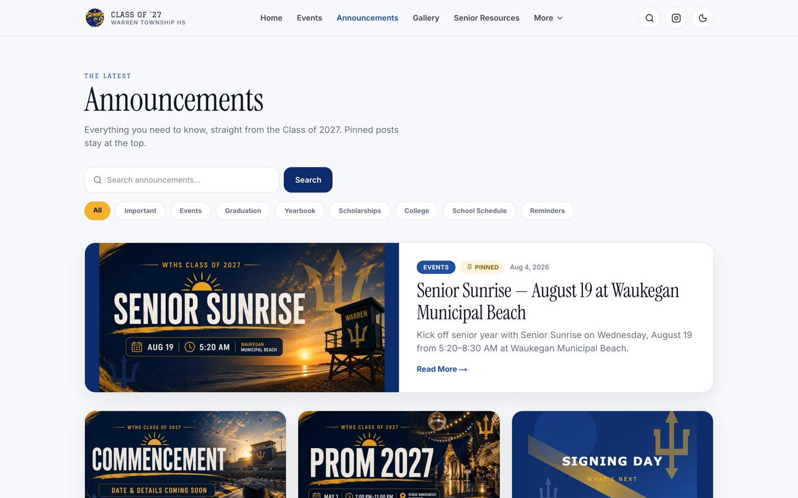
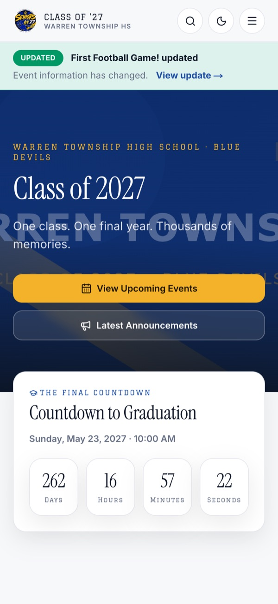

Work · Case study
Student Council President, and the site that runs senior year.
I have led the Class of 2027 at Warren Township High School since freshman year. In 2026 I built wths2027.com so the whole class has one place for everything that happens before graduation.

The job
Student council is the layer between the class and the school. Senior year is the heaviest version of it: Senior Sunrise, homecoming, yearbook deadlines, prom, graduation, and a hundred questions a week about all of them.
Every year those answers were scattered across group chats, Instagram and paper. I wanted one place that was always right.
What I built
- Public pages for events with RSVPs, add-to-calendar links and a calendar view; announcements with categories and pinned posts; deadlines; yearbook and graduation information; a photo gallery; senior spotlights; and an opt-in senior directory.
- Moderated forms so classmates can submit photos, request announcements and nominate people for spotlights without anyone touching code. Rate limiting and honeypots keep the forms clean.
- An admin dashboard with roles for editors, photographers and moderators, an audit log and basic analytics, so the council can run the site as a team.
- A management API with a bearer key so trusted automation can post events and announcements.
- A countdown to graduation, a QR code generator for posters, dark mode, search, and a weather widget for the Gurnee campus.
How it runs
It is a Next.js application in TypeScript with a SQLite database, deployed in a Docker container on Railway with a persistent volume for the database and uploaded photos. I keep it running, keep the information accurate, and manage the class Instagram, @2027wths, alongside it.
In its first month the site’s own analytics recorded 1,101 visits and 1,860 page views, and the Instagram account has passed 72,000 views.
What I learned
The code was the smaller half. Deciding what the class actually needed, keeping dates correct when the school changes them, and building the roles and moderation that let other students contribute safely took longer and mattered more.
It also changed how I think about leadership: the best thing I did as president this year was build something that works when I am not in the room.
Screens


